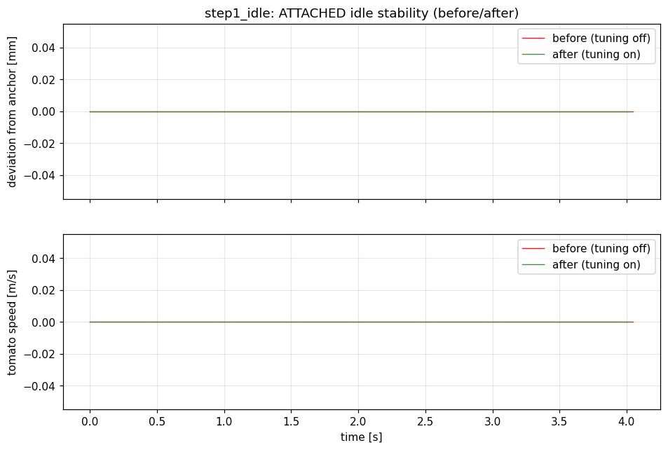
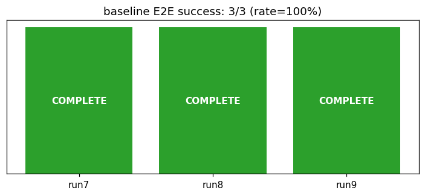
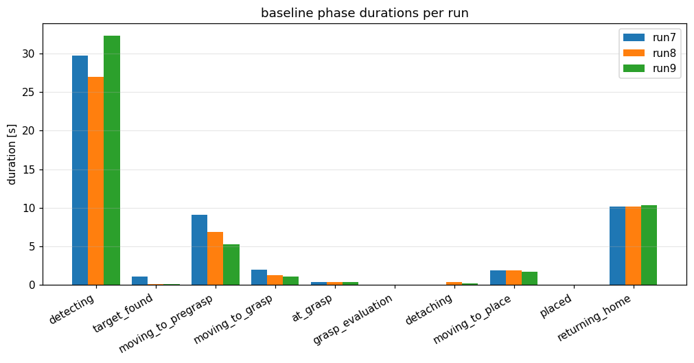

Step 1 検証レポート: 物理モデルの土台整備
実施日: 2026-07-09 ／ Issue: #2 ／ ブランチ: physics/step1-physics-foundation（Step 0 マージ済み main 起点）
実行環境: docker コンテナ tomato-harvest-sim-physics（Isaac Sim 6.0 / ROS 2 Jazzy / ROS_DOMAIN_ID=1）
総合判定: 合格（Issue #2 の完了条件をすべて満たす）
① 摩擦マテリアル・コリジョン・ソルバ設定を scene.yaml の physics: セクションへ集約し、適用12項目をログで実証。
② ATTACHED 静置 800 ステップでテレポート復元 0 回（before/after とも）。
③ franka.usd の finger collider 検査を完了（convexHull 近似・マテリアル未割当と判明）。
④ E2E 回帰 3/3 成功（ベースライン 5/5 から劣化なし）。
⑤ 既存テスト全通過（新規 5 件を含む 100 件）。
副次成果: チューニング適用後、初めて両 finger の物理接触を観測（run8）。
1. 完了条件と結果の対比
| Issue #2 の完了条件 | 結果 | 判定 |
|---|
| scene_config が新パラメータを読める単体テスト | test_scene_config_physics.py 5 件追加・通過（全項目読込・セクション欠落時の無効化・不正 combine mode 拒否・env キルスイッチ） | PASS |
| ATTACHED 静置 500 ステップでテレポート復元 0 回 | 800 ステップ実施し 0 回（before/after とも）。2章 | PASS |
| franka.usd の finger collider 検査結果の記録 | 3章に記録（検査スクリプト scripts/inspect_franka_colliders.py 追加） | PASS |
| 既存テスト全通過・E2E 無劣化 | 100 件通過。E2E 3/3 成功（4章） | PASS |
| 検証レポート（グラフ・対比表・一目で合否判断） | 本レポート | PASS |
2. ATTACHED 静置検証（before/after 各 800 ステップ）
スタンドアロン viewer をヘッドレスで 800 ステップ静置し、トマトの茎アンカーからの偏差・速度・テレポート復元回数を計測した。before は TOMATO_HARVEST_PHYSICS_TUNING=0（適用なし）、after は適用あり（[PhysicsTuning] enabled=True applied_items=12 をログで確認）。

図 2-1: 静置中の偏差（上）と速度（下）。before/after とも偏差 0.0 mm・速度 0.0 m/s で完全静止、テレポート復元 0 回。
| 指標 | before（適用なし） | after（適用あり） | 合格基準 |
|---|
| 最大偏差 | 0.0 mm | 0.0 mm | —（参考） |
| テレポート復元回数 | 0 | 0 | 0 回 |
解釈: ATTACHED 中は stem FixedJoint が剛結しているため、静置安定性はチューニング有無に依存しない（どちらも完全静止）。本検証の意味は「チューニング追加が静置を劣化させない」ことの確認であり、合格基準（復元 0 回）を満たす。なお Step 0 ベースラインでもテレポート復元は観測されておらず、計画時に懸念した発散は現行構成では起きていない。
3. franka.usd finger collider 検査（計画 §9.1-R5 の実測確認）
検査スクリプト scripts/inspect_franka_colliders.py（SimulationApp ヘッドレス起動、インスタンスプロキシ走査）による公式アセット（.../Assets/Isaac/6.0/Isaac/Robots/FrankaRobotics/FrankaPanda/franka.usd）の実測結果:
path=/World/FrankaPanda/panda_hand/geometry/panda_hand type=Mesh collision=1 mesh_approx=convexHull physics_material=none
path=/World/FrankaPanda/panda_rightfinger/geometry/panda_rightfinger type=Mesh collision=1 mesh_approx=convexHull physics_material=none
path=/World/FrankaPanda/panda_leftfinger/geometry/panda_leftfinger type=Mesh collision=1 mesh_approx=convexHull physics_material=none
| 確認項目 | 結果 | 対応 |
|---|
| collider の有無 | 両 finger・hand とも Mesh collider あり | そのまま利用可能 |
| 近似方式 | convexHull（平坦な把持パッド形状ではない） | Step 2/3 で把持が不安定な場合、パッドへの解析形状（box）collider 追加を検討（計画どおり） |
| 物理マテリアル | 未割当（PhysX 既定値で動作していた） | 本 Step で gripper_material（ゴム相当）を link prim へバインド（配下の instanced mesh に継承） |
| prim 構造 | instanceable 参照（既定 Traverse では collider 不可視） | 検査はプロキシ走査で対応。バインドは link Xform 適用で有効 |
4. E2E 回帰（チューニング適用・success モード 3 回)

図 4-1: チューニング適用後の E2E 成否 — 3/3 COMPLETE。ベースライン（Step 0、5/5）から劣化なし。

図 4-2: フェーズ所要時間（run7〜9）。detecting 27〜32 秒・搬送系 2〜9 秒で、ベースライン run2〜5（26〜53 秒・2〜10 秒）と同水準。
表 4-1: ベースライン（Step 0）との比較
| 指標 | Step 0 ベースライン（run2〜5） | Step 1 適用後（run7〜9） | 判定 |
|---|
| E2E 成功率 | 4/4（run1 含め 5/5） | 3/3 | 劣化なし |
| detecting 所要 | 26.7〜53.4 s | 27.0〜32.3 s | 同水準 |
| moving_to_pregrasp 所要 | 3.0〜7.0 s | 5.3〜9.1 s | 同水準 |
| 把持〜引抜時の茎張力ピーク | 2.04〜2.63 N | 2.57〜2.90 N | 参考（Step 4 入力） |
副次成果 — 初の両 finger 物理接触（Step 2/3 への引き継ぎ）:
接触イベント数と finger 別の非ゼロ力積サンプル数は次のとおり。
run7: 左 198 / 右 0（イベント 498）、run8: 左 201 / 右 202（イベント 446）、run9: 左 188 / 右 0（イベント 576）。
Step 0 時点（修正後 run6）では右 finger の接触はゼロだったが、摩擦マテリアル・contact offset・ねじり摩擦の適用後、3 回中 1 回で両指の物理接触が成立した。ただし再現率は 1/3 であり、両指接触の安定化（グリッパー中心とトマトの整列、閉じ力の対称性）は計画どおり Step 2（把持力上限制御）の主課題となる。
5. 適用した設定値（scene.yaml physics セクション）
| 項目 | 値 | 根拠 |
|---|
| tomato_material | 静摩擦 1.2 / 動摩擦 1.0 / 反発 0.1 | 計画 §5 Step 1 の初期値（果皮相当の高摩擦・低反発） |
| gripper_material | 静摩擦 1.1 / 動摩擦 0.9 / 反発 0.05 | ゴムパッド相当 |
| container_material | 静摩擦 0.8 / 動摩擦 0.7 / 反発 0.2 | トレイ内バウンド抑制（Step 5 の settle 判定を見据える） |
| friction_combine_mode / restitution_combine_mode | max / min | 接触ペアで摩擦は大きい方・反発は小さい方を採用（把持優先・バウンド抑制） |
| tomato contact/rest offset | 0.002 / 0.0 m | 半径 0.01 m の小径球向けに接触検出帯を狭める |
| torsionalPatchRadius / min | 0.004 / 0.001 m | 球の点接触へのねじり摩擦付与（計画 §9.1-R3、実環境スキーマで確認済み属性） |
| tomato solver iterations | position 16 / velocity 4 | トマト剛体のみ増強しシーン全体へ波及させない（計画 §8 リスク対応） |
物理 dt は 60 Hz のまま変更していない（アーム制御・JTC が 60 Hz 前提でチューニング済みのため。変更は Step 2 以降で必要になった場合に再検討）。値はすべて scene.yaml で管理され、TOMATO_HARVEST_PHYSICS_TUNING=0 で一時無効化できる。
6. 成果物と再現手順
| 実装 | scene_config.py（physics ローダ+検証）、physics_tuning.py（USD 適用、新設）、physics_harvest.py（prepare_scene 統合）、config/scene.yaml（physics セクション） |
|---|
| テスト | test_scene_config_physics.py 5 件（計 100 件通過） |
|---|
| スクリプト | scripts/inspect_franka_colliders.py、scripts/plot_idle_comparison.py |
|---|
| データ | docs/reports/data/idle_{before,after}.log.gz、sim_run{7..9}.log.gz、robot_run{7..9}.log.gz、docs/reports/img/step1_*・run{7..9}_* |
|---|
| 再現手順 | ① 静置 A/B: TOMATO_HARVEST_DEBUG_PHYSICS_GRASP=1 [TOMATO_HARVEST_PHYSICS_TUNING=0] ./python.sh scripts/run_harvest_viewer.py --headless --headless-steps 800 ② E2E: HEADLESS_STEPS=6000 ./scripts/run_baseline_e2e.sh 7 9 ③ グラフ: plot_idle_comparison.py / plot_physics_observation.py / plot_baseline_summary.py ④ collider 検査: ./python.sh scripts/inspect_franka_colliders.py |
|---|